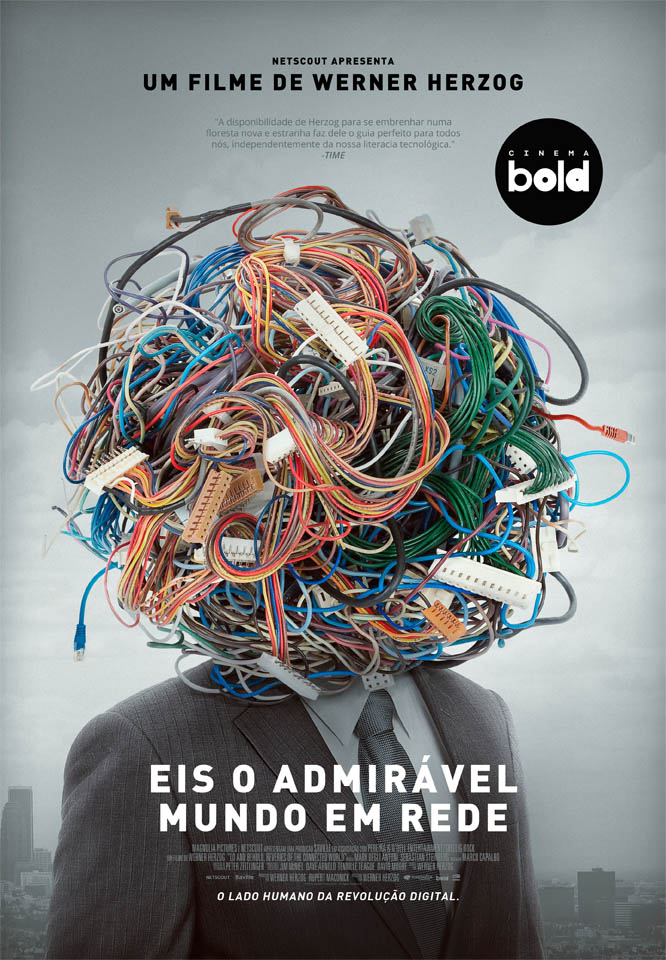

LO AND BEHOLD
★5.8/10(29k votes)
1h 31m. Drama.Sci fi.Thriller
About The Movie
"Lo and Behold: Reveries of the Connected World" is a 2016 documentary film directed by Werner Herzog. The film explores the impact of the internet, robotics, and artificial intelligence on human life and society. It features interviews with various experts, including internet pioneers and scientists, discussing topics such as cyber security, the future of AI, and the implications of an increasingly connected world. Herzog's distinctive narrative style and thought-provoking questions make it a compelling exploration of modern technology and its potential future.